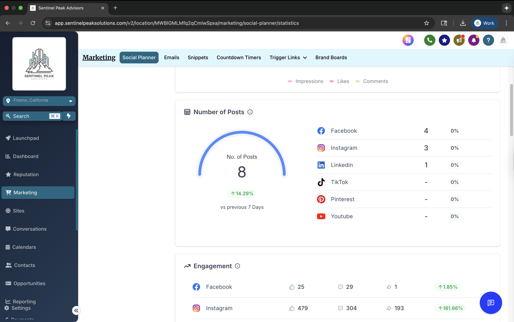
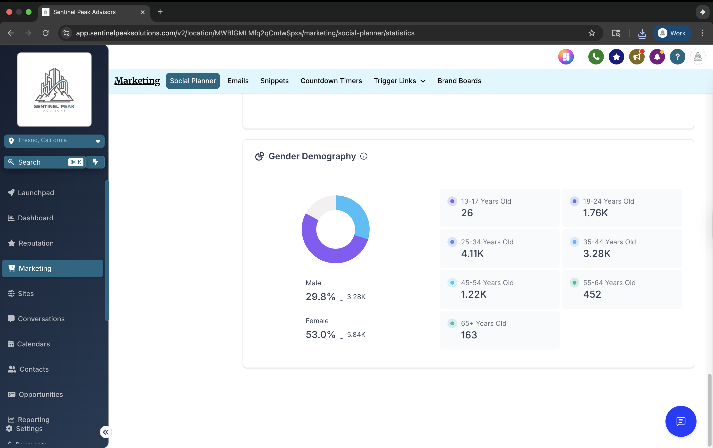

The PM Lounge
What we did
We ran their social presence through our platform's analytics, tracking reach, engagement, and audience across every channel in one place, so content decisions come from real signals instead of guesswork.
What it shows
Reach climbed well beyond their existing follower base, and the audience breakdown makes clear who is actually responding, so the next round of content can be aimed rather than guessed.